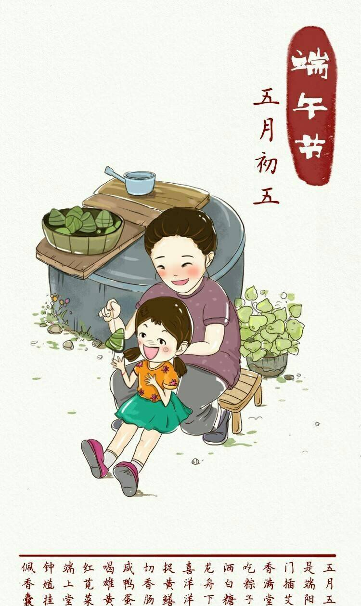

端午节（英文为Dragon Boat Festival或Double Fifth Festival）又称为端阳节，为每年的农历5月初五日，在湖北、湖南、贵州、四川一带，端午节又分为大端午与小端午。小端午为每年农历五月初五，大端午为每年农历五月十五日。
时至今日，端午节在中国人民中仍是一个十分盛行的隆重节日。国家非常重视非物质文化遗产的保护，2006年5月20日，该民俗经国务院批准列入第一批国家级非物质文化遗产名录。
2009年9月30日在阿联酋首都阿布扎比召开的联合国教科文组织保护非物质文化遗产政府间委员会会议决定：中国端午节成功入选《世界人类非物质文化遗产代表作名录》。